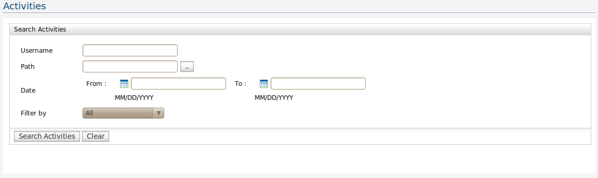
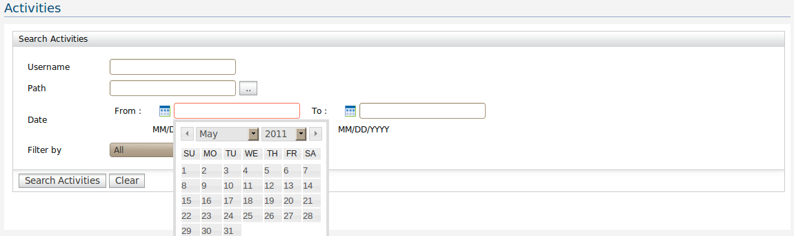
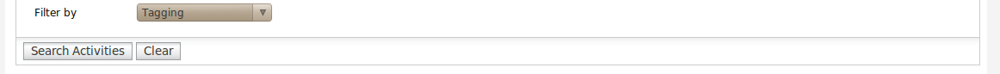

All registry related activities can be searched through this interface. Your search can be refined by providing optional fields, username, resource path and date range. Activity Search would result all the activities that has been done on the registry including any activity performed through the UI, using an external client or etc.

Figure 1: Registry activity search interface.
The date can be either entered in the format of MM/DD/YYYY or used the date picker user interface provided.

Figure 2: Date picker user interface
Your search can be further refined by selecting one of the following options under "Filter By" field.

Figure 3: Filter option.
In the search result page the user is able to generate a report which will include search results.The user is able to create reports in PDF,HTML or Excel.
Figure 3: Reporting options.